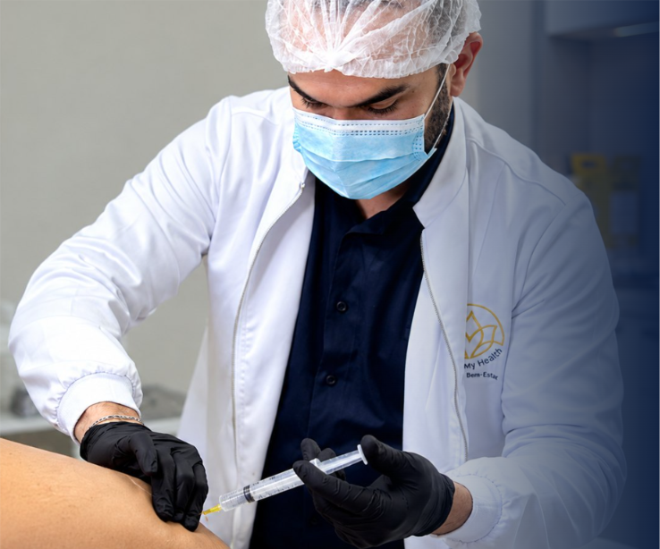

Avaliação guiada
Descubra o que o seu rosto está pedindo
Leva cerca de 1 minuto. Ao final, você recebe uma orientação e pode agendar a sua avaliação.
Nossos tratamentos
Procedimentos
A indicação de cada tratamento é sempre feita pelo profissional, na avaliação. Passe o mouse (ou toque) em um cartão para ver mais.
Quem cuida de você
Dr. Álfares Lustosa
Prazer, me chamo Álfares Lustosa À frente do Instituto Álfares Lustosa desde 2017, atuo na área de estética avançada com foco em tratamentos personalizados, valorizando a beleza natural, a segurança e a individualidade de cada paciente. Minha filosofia de atendimento une conhecimento técnico, avaliação individualizada e olhar estético, buscando resultados equilibrados e naturais, respeitando as características e expectativas de cada pessoa. Cuidar da sua beleza é, além de tudo, entender o que faz você se sentir bem.
Nosso compromisso é com resultados naturais e com uma avaliação individual, antes de qualquer indicação.
Resultados
Resultados naturais
Deslize a galeria para o lado e arraste a bolinha de cada foto para comparar o antes e o depois.
Resultados variam de pessoa para pessoa. A indicação é feita na avaliação.
Depoimentos
O que nossos pacientes dizem
Dúvidas frequentes
Perguntas frequentes.
O que é harmonização facial?
É um conjunto de procedimentos que busca equilibrar as proporções do rosto, respeitando as características de cada pessoa. A indicação é sempre feita pelo profissional, depois de uma avaliação.
Como funciona uma avaliação estética?
Na avaliação, o profissional conversa sobre suas expectativas, seu histórico de saúde e suas necessidades, e orienta sobre as possibilidades de cuidado para o seu caso.
Quais procedimentos são oferecidos?
Trabalhamos com [toxina botulínica, preenchimentos, fios de PDO e outros]. Veja a seção "Procedimentos" para conhecer cada um. A indicação depende da avaliação individual.
Como saber qual procedimento é adequado?
Você pode fazer o questionário do site para receber uma orientação inicial. Ela não substitui a avaliação: quem define o que é adequado para você é o profissional, pessoalmente.
Como agendar uma avaliação?
É só clicar em "Agendar consulta" para falar com a gente pelo WhatsApp. Informamos os horários disponíveis e confirmamos o seu atendimento
Onde fica o consultório?
Av.Epitácio Pessoa, Empresarial Epitácio Pessoa, 1251 - barrio dos estados, João Pessoa - PB

Marque sua consulta
Seu momento
de cuidado
começa aqui.
Entre em contato para obter informações e solicitar uma avaliação individualizada.
Contatos
Vamos conversar?
Escolha o jeito mais fácil para você.
Chamar agora
Resposta rápida, com horários de avaliação.
TelefoneLigar
InstagramAcompanhar
Novidades e bastidores da clínica.